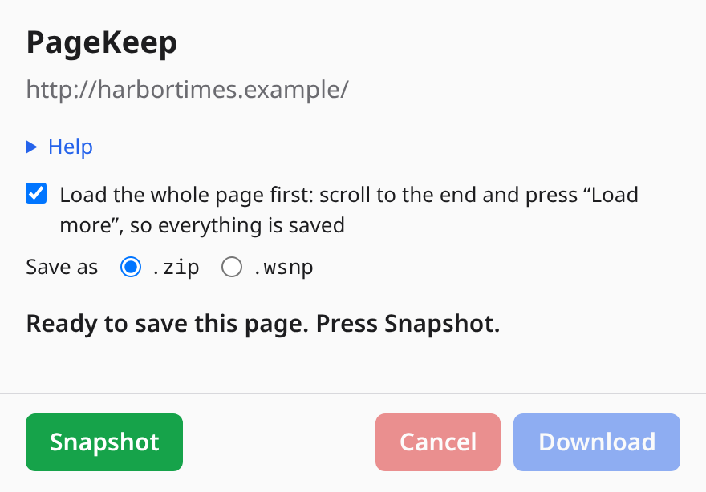
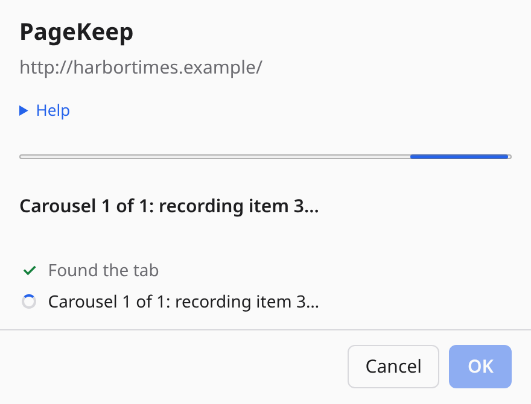
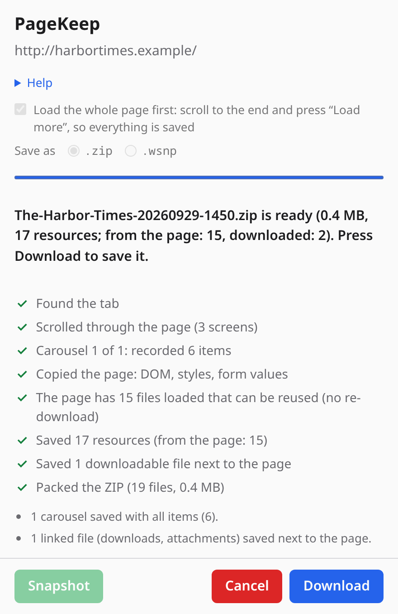
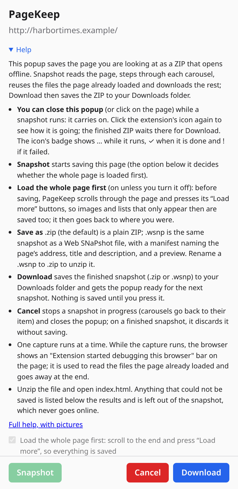
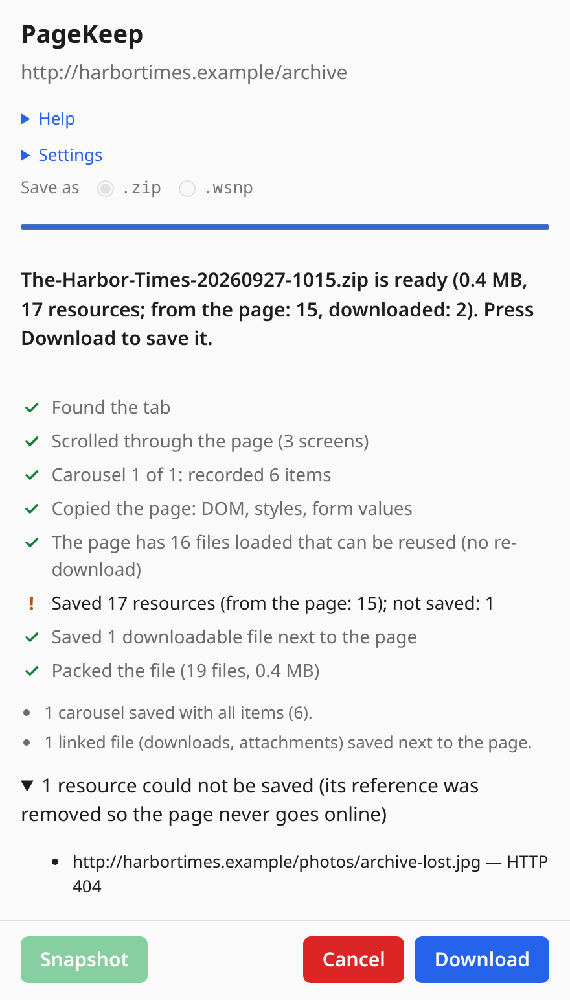
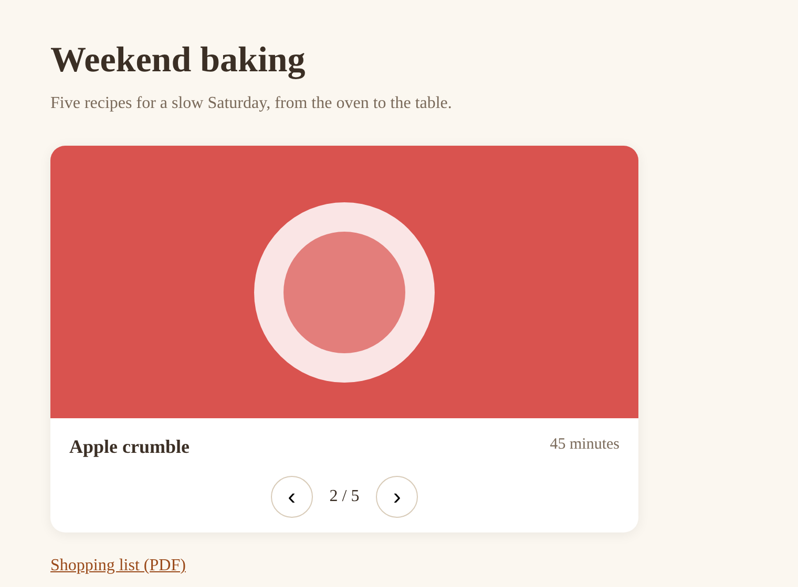

Quick start
- Open the page you want to keep, and leave it the way you want it saved: scrolled, sections opened, a form filled in.
- Click the PageKeep icon in the toolbar, or press Alt+Shift+S. The popup opens under the icon; nothing starts yet. Press Snapshot (or Enter).
- Watch it go: one line per step, with a spinner that turns into a check mark. On a page with a carousel you see each item being recorded.
- When it is ready, press Download: the file goes to your Downloads folder, named after
the page's title with the date and time, for example
The-Harbor-Times-20260927-1015.wsnp(or.zip, see .zip or .wsnp), and the popup is ready for the next snapshot. Cancel discards it instead.

.wsnp).
While it runs
- Load the whole page first (an option in the popup, on unless you turn it off): before saving, PageKeep scrolls through the page and presses its "Load more" buttons, so pictures and lists that only appear then are saved too, and goes back to where you were. It never follows a link to another page or sends a form. Endless feeds stop after 40 screens or 20 seconds. Set it before pressing Snapshot; it is remembered.
- Record what each choice shows (an option in the popup, off unless you turn it on): some forms only show their next step once an option is chosen ("Yes, I'm ready" shows the next questions), so it is not in the page until then. With this on, PageKeep chooses each option of every group of radio buttons in turn, records what the page shows for each (including the next questions an answer reveals, up to 4 levels deep), and puts your choice back; in the copy, choosing an option shows what the page showed for it. It acts on the page as you would: a site may save those answers, or keep the last option chosen when nothing was chosen before. The popup then names that option, so you can check it on the site. Use it only on pages where choosing options is harmless.
- Save as
.zipor.wsnp(.zipunless you choose otherwise; remembered; set it before pressing Snapshot): see .zip or .wsnp below. - You can close the popup, or click on the page: the capture carries on in the background. Click the icon again to see how it is going.
- The icon's badge shows … while it runs, ✓ when it is done and ! if it failed, so you know without opening the popup.
- Cancel stops the capture: carousels go back to their first item and nothing is saved.
- The browser shows a bar saying the extension started debugging it. PageKeep uses the browser's debugger to read the files the page already loaded, the exact bytes you saw, and to download the few it had not; the bar goes away when the capture ends.
- One capture runs at a time. If you open the popup on another tab while one runs, it shows that capture.
- Keep the browser window open (not minimized) until the end: a page in a minimized window is slowed down by the browser, and carousels then take much longer.
The result
When the capture ends, nothing has been saved yet: the popup keeps the result until you press Download or Cancel, even if you close it or open it on another tab:
- the file name, its size, and how many files it holds (how many were read from the page and how many downloaded);
- notes on what needed special care: carousels saved with all their items, code editors saved as text, files offered for download saved next to the page;
- Download saves the file to your Downloads folder and gets the popup ready for the next snapshot;
- Cancel discards the result without saving anything.
The popup's Help section sums this up, with a link to this page.

.wsnp..zip or .wsnp
The popup's Save as choice sets the kind of file. PageKeep remembers it, and it cannot be changed while a capture runs.
.zip(the default) is a plain ZIP. Any unzip tool opens it, and itsindex.htmlworks offline in a browser..wsnp(Web SNaPshot) is the same page as one file, a container: the page and every file it needs in a single ZIP, with a manifest that names the page's address, title and description and lists each file with its type, size and SHA-256, the offline scripts in_wsnp/, and a preview picture. You can keep it, send it, and open it with a.wsnpviewer. To unzip it yourself, rename it to.zip.- A
.wsnpis signed, so a viewer can tell if the file was edited afterwards. The first time it is needed, PageKeep makes a signing key. The key is kept only in this browser (its private half cannot be read or exported, not even by PageKeep), it is never sent anywhere, and its public half and fingerprint are written into each.wsnp. The fingerprint is shown in the popup's Help, with a Copy button, so you can tell the viewer that the key is yours. A.zipis not signed.
The .wsnp format is described in the project's docs/FORMAT.md. The WSNP Viewer is
a separate desktop application for opening .wsnp files (Linux, Windows and macOS), still in
development: there is no release yet, so for now unzip a .wsnp as described
below.

What is saved
- The page as it is on screen now, not as the server first sent it: content that scripts added, sections you opened, the current values of forms (password fields are always left empty), and canvases, saved as pictures.
- Its files: stylesheets (and what they import), images in every size the page offers, fonts, icons, video posters and small audio or video files.
- Carousels with "Next" and "Previous" buttons: PageKeep steps through every item (from the first, even if the carousel was on another one), puts the page back where it was, and the saved copy opens on the same item, with its buttons working. That goes for carousels that show one item at a time and for those that slide a strip of items sideways.
- Collapsible sections, accordions, tabs, drop-down menus, pop-up windows (modals and dialogs) and "Expand all" buttons keep working in the saved copy, through small scripts packed into it that never go online.
- Photo galleries whose thumbnails open a larger picture: the large pictures are saved, and a click on a thumbnail opens it over the page, with previous / next and close, as on the site.
- Code editors (like the one in VS Code) become ordinary text you can scroll and select, with the complete file when the page links to it.
- Files offered for download (attachments, PDFs, archives from the same site), up to 25, saved next to the page so their links work offline.
- Text cut short with "…more" appears in full.
What is not saved
- Frames from other sites (ads, embedded video players, maps) cannot be read, so the copy shows a picture of how each looked, in the same place; it does not play or respond to clicks. Invisible ones (tracking) are removed.
- Files over 30 MB, and anything past 800 MB in total.
- Browser pages such as
chrome://ones and the extension store: the browser does not let extensions read them.
Whatever could not be saved is listed in the popup, and its reference is removed from the saved copy instead of pointing at the live site, so the copy never goes online. If a file failed only for a passing reason (it timed out), capture the page again.

Opening the file
Unzip it anywhere and open index.html in the browser, with or without an internet connection:
index.html the page, pointing at the files in assets/ assets/ the page's files, in images/, styles/, fonts/, media/ and files/ (saved downloads) snapshot.json the page's address and title, the date, each file saved and each one that failed
A .wsnp renamed to .zip unzips the same way, with manifest.json in place
of snapshot.json, signature.json (the signature of the manifest), the offline scripts and a
preview picture in _wsnp/, and a first file named mimetype that identifies the
format.
Opening it makes no request at all. Links to other pages still lead to the real site when you click them while online; links to a place in the page itself (a table of contents, "jump to" links) stay in the copy and open the section they point to.

.wsnp, renamed to .zip, unzipped and opened offline: every photo is there, and its tabs, live-updates box and photo gallery still work.Troubleshooting
- "The browser does not allow reading this page": it is a browser page (
chrome://, the extension store, another extension's page). Those cannot be saved. - "Could not read the page's loaded files": the browser's debugger could not attach to the tab. The capture carries on, but only files from the page's own site can be saved; close developer tools or other debugging extensions on that tab and try again.
- The Help shows no signing key: the browser could not make or keep one. A
.wsnpis then saved unsigned, which is still a valid file; only the protection against later edits is missing. - The popup shows another page's capture: one capture runs at a time. Wait for it, or press Cancel, then click the icon on your tab.
- A carousel was not recorded: PageKeep recognises carousels by their arrow buttons' labels in the page's code: "Next" / "Previous", or the same in Portuguese ("Próximo", "Anterior") or Spanish ("Siguiente", "Anterior"), alone or with what they move ("Next slide", "Imagen siguiente"). Other carousels are saved on the item that was showing. Buttons that submit a form are never pressed.
Privacy
PageKeep reads a page only when you click its icon on that tab, and only while the capture runs. What it
reads goes only into the file (ZIP or .wsnp) saved on your computer, and the signing key of the
.wsnp files never leaves the browser. Nothing is sent to the developer or anyone else: there
is no account, no server and no analytics. The only requests it makes are for the page's own files, to the
servers that page already uses.